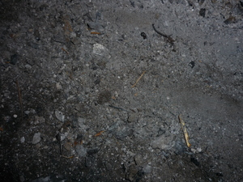
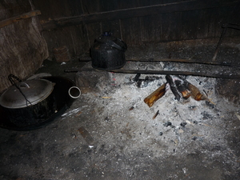

abu  
/ʔabu/
n.
“ash”
n.
the greyish white ash from a fire
Ka abu iyan ka igmuk ne egkalimud ne egpuun te kayu ne igtemeg wey ke ig-undul. Egpekeiling seini te abug piru ka batek din meebul ne egkataman egkeyimu e seini ne tanè.
Usig ne egbuluku ka Miyew diyè te abu.
The cat fond curls up on the ash.
Wrd.Gloss: ash
O. Syn. igmuk
Eng. ash
OCM: Building Interiors and Arrangement (353)
Online dict status: -
Usage level: B
n.
(abuwan, -an) an (open) fireplace for cooking, or the room containing the fireplace
Ka seini ne lalag iyan sika se eggilutuan te minsan nekey ne keilangan ne egsubbeen kayi degma egkakita ka hapuy wey seini ugpu re te baley.
Hendiyè ka te abuwan ne keen ka.
Go to the cooking place and eat.
Usig ne egkumu-kumu ka buyag diyè te abuwan tagsè maselem.
Old people squat down every morning with their arms around their legs next to the fireplace.
Spec. tulang
Eng. fireplace; firebox; hearth; kitchen; stove; oven
Tag. kusínà; ápúyan; dapóg
Ceb. kusina; abúhan
Ilo.: kusína; dapugán
OCM: Food Preparation (252), Building Interiors and Arrangement (353)
Online dict status: -
Usage level: F
v.
for someone (eg-aabu, mig-aabu/in-aabu, agent, eg><ø-rdpCV-) to build or make a fireplace
Eng. build, to; make, to
Online dict status: -
Usage level: M
adj.
(abuwen, -en) grey, e.g., as if covered in ash
Mig-atelug ka manuk ku ne abuwen diyè te sapiling.
My grey chicken laid an egg in the back yard.
Eng. grey; gray
Tag. kúlay-abó
Ceb. abuhon
Ilo.: dapúl
OCM: Visual Arts (5311)
Online dict status: -
Usage level: M
Updated by: RJH,RJH,AAA,AAA,RJH,NJK,NJK,QDL
Last updated: 16/Aug/2010
This page last updated: 19/May/2012
Copyright © 2009-2010, Matigsalug Language Christian Association, Inc